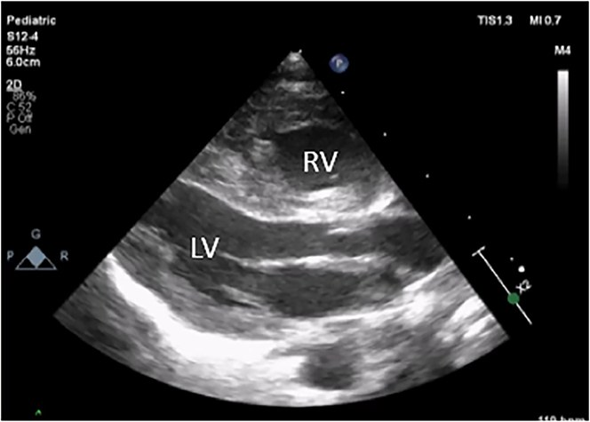
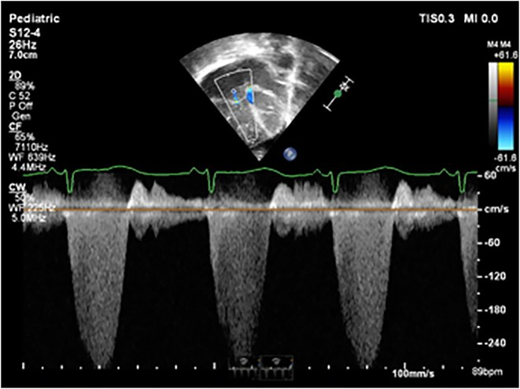
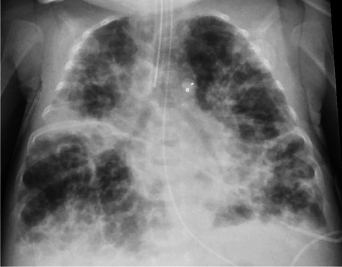
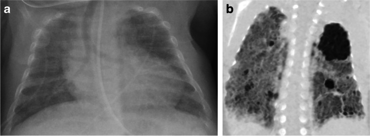

1802 — Theo dõi dài hạn sau PPHN: tăng áp phổi tái phát, phát triển thần kinh & nghe kém / Long-term follow-up after persistent pulmonary hypertension of the newborn
Tags: pattern:tang-ap-phoi pattern:phi-dai-that-phai vung:phoi-nhi vung:tim anatomy:tim-phai protocol:Sieu-am-tim protocol:CT-nguc-lieu-thap protocol:MRI-nao protocol:ABR incidentaloma:khong
Mức chắc chắn (certainty): tổng hợp y văn (literature synthesis) — ghép đoàn hệ 55 trẻ PPHN 1–5 tuổi (Front Pediatr 2024, PMC11538055), tổng quan biến chứng muộn của tăng áp phổi sơ sinh (Clin Perinatol 2024, PMC10850767), ca PPHN do đóng ống động mạch sớm (Case Rep Perinat Med 2024, PMC12048142), tổng quan hình ảnh BPD (Pediatr Radiol 2022, PMC8921108), đoàn hệ HRCT BPD (Front Pediatr 2022, PMC9530466), khảo sát liều bức xạ ở trẻ tăng áp phổi (Pulm Circ 2023, PMC10442605) và protocol siêu âm tim trong tăng áp phổi nhi (Pulm Circ 2016, PMC4860554). Không có ca do nhóm tự chụp.
Câu hỏi thực hành: bé gái 34 tuần, PPHN nặng phải dùng iNO 4 ngày, xuất viện tuần thứ 5. Cha mẹ hỏi: “Bệnh đã khỏi chưa, có phải tái khám không, và vì sao bác sĩ hẹn đo thính lực?” Bài chốt bốn quyết định: (1) PPHN không phải bệnh “khỏi khi ra viện” — 25% trẻ có di chứng phát triển thần kinh ở 18–24 tháng và 6,4% có nghe kém tiếp nhận ở tuổi đi học; (2) siêu âm tim là công cụ theo dõi tăng áp phổi, đo TRV → RVSP, không chỉ “xem tim có to không”; (3) CT ngực liều thấp + MRI/CT động chỉ khi có chỉ định rõ, vì mỗi trẻ tăng áp phổi nhận trung bình 73 lần chụp có bức xạ; (4) nghe kém sau PPHN xuất hiện muộn và tiến triển — phải đo ABR lại, không dựa vào sàng lọc sơ sinh. Nối 607 – PPHN cấp, 686 – Tăng áp phổi trong bệnh phổi mạn nhi, 602 – TBM ở trẻ BPD, 654 – Tổn thương não sơ sinh không do ngạt.
1. Tổng quan bệnh học – cơ chế hình ảnh: vì sao PPHN để lại di chứng ở phổi, não và tai
- Bản chất PPHN: sau sinh, sức cản mạch phổi (pulmonary vascular resistance, PVR) phải giảm nhanh để máu qua phổi. Khi PVR không giảm (hoặc tăng lại), máu đi tắt qua ống động mạch (ductus arteriosus) và lỗ bầu dục (foramen ovale) từ phải sang trái → giảm oxy máu dù thông khí bình thường. Tần suất ~0,2% trẻ đủ tháng (2/1.000) và 2–8% trẻ sinh non (Clin Perinatol 2024, PMC10850767).
- Vì sao phải theo dõi lâu dài — bốn trục tổn thương:
- Tim–phổi: tăng áp phổi tồn tại/tái phát, phì đại thất phải, suy tim phải; ở trẻ sinh non là BPD-PH.
- Não: thiếu oxy–tưới máu não không đều trong giai đoạn cao điểm bệnh → chậm phát triển, bại não, giảm IQ, rối loạn ngôn ngữ–hành vi.
- Tai: nghe kém tiếp nhận (sensorineural hearing loss, SNHL), thường xuất hiện muộn và tiến triển.
- Dinh dưỡng–tăng trưởng: bú kém, trào ngược, chậm tăng cân, tái nhập viện vì hô hấp.
- Con số phải nhớ (đủ tháng/đủ gần tháng):
- Di chứng phát triển thần kinh (neurodevelopmental impairment, NDI) ~25% ở 18–24 tháng; bại não (cerebral palsy) trung bình–nặng 3,8% (Clin Perinatol 2024, PMC10850767).
- Ở tuổi đi học (109 trẻ): IQ < 70: 9,2%, IQ 70–84: 7,4%, SNHL: 6,4%, 24% có vấn đề hô hấp/ăn uống kéo dài (Clin Perinatol 2024, PMC10850767).
- Đoàn hệ Pháp 55 trẻ 1–5 tuổi: 47,3% có điểm ASQ-3 ở mức ranh giới/nghi bệnh (18% nghi bệnh, 29% ranh giới); 72% trẻ 12–24 tháng có điểm bất thường, nhưng 85,7% trẻ 48–60 tháng đã bình thường (Front Pediatr 2024, PMC11538055).
- Yếu tố dự báo NDI — định lượng: mỗi 1% giảm SpO₂ trước ống (preductal) làm tăng 10% nguy cơ điểm ASQ-3 bất thường (OR 1,1; 95% CI 1,04–1,18); nhóm bất thường có SpO₂ tối thiểu 75,4 ± 13,4% so với 82,2 ± 9,8% ở nhóm bình thường (P = 0,02). Đây là lý do phải ghi lại SpO₂ xấu nhất trong đợt cấp vào hồ sơ theo dõi (Front Pediatr 2024, PMC11538055).
- TẠI SAO hình ảnh phản ánh đúng mức nặng: tăng áp phổi → thất phải dày/giãn, vách liên thất phẳng thì tâm thu (D-shaped LV), giãn động mạch phổi; trên CT, phổi BPD mất đàn hồi, ứ khí và xơ hóa quanh đường thở → giảm thể tích chức năng, tăng áp lực đường thở, càng nuôi dưỡng vòng xoắn tăng áp phổi. Trên MRI não, tổn thương chất trắng/vỏ–hạch nền do thiếu oxy–tưới máu giải thích NDI; mức nặng trên hình ảnh tỉ lệ thuận với di chứng.
- Ngưỡng tiên lượng bằng hình ảnh (ECMO): NDI 57% nếu tổn thương nặng trên neuroimaging, 33% mức trung bình, 13% mức nhẹ, 10% khi không có tổn thương (Clin Perinatol 2024, PMC10850767). Nghĩa là hình ảnh âm tính không loại trừ NDI, nhưng hình ảnh nặng là cờ đỏ cần can thiệp sớm.
- BPD-PH — nhánh song song: tử vong trong viện 6–38%, gấp ~5 lần nguy cơ tử vong trước xuất viện so với BPD đơn thuần; tử vong tích lũy 40% ở 2 năm; nhưng phần lớn trẻ sống sót hết tăng áp phổi trước 2,5 tuổi (Clin Perinatol 2024, PMC10850767). Điều này quyết định thời điểm ngừng theo dõi, không phải ngừng ngay khi hết triệu chứng.
2. Mẫu hình + chẩn đoán phân biệt theo thời điểm (Gamut)
- 0–6 tháng — “tăng áp phổi còn tồn tại”: khó cai oxy, tăng nhu cầu thở, bú kém; siêu âm tim thấy TRV còn cao, thất phải giãn, vách phẳng. Phân biệt với shunt trái–phải còn tồn tại (PDA/VSD), hẹp tĩnh mạch phổi (pulmonary vein stenosis), bệnh phổi nhu mô nặng.
- 6–24 tháng — “tái phát theo đợt”: tăng áp phổi bùng lên khi nhiễm virus, hít sặc, xẹp phổi, thiếu máu; ở trẻ non tháng là BPD-PH + TBM — đây là giai đoạn tử vong cao nhất của BPD-PH.
- 2–5 tuổi — “di chứng phát triển”: ngôn ngữ, vận động tinh, hành vi; nghe kém; đo Bayley/ASQ-3.
- > 5 tuổi — “di chứng học tập & tăng áp phổi khi gắng sức”: IQ, học hòa nhập, khả năng dung nạp vận động, tăng áp phổi khi gắng sức ở trẻ từng BPD nặng.
- Gợi nhớ H.E.A.R. (bốn việc của mỗi lần tái khám): Hearing (thính lực/ABR) · Echocardiography (TRV, RVSP, chức năng thất phải) · Airway & lung (triệu chứng, SpO₂, X-quang/CT khi cần) · Rehabilitation & growth (Bayley/ASQ-3, dinh dưỡng, can thiệp sớm).
- Gamut nguyên nhân tăng áp phổi “mới xuất hiện” ở trẻ từng PPHN: PH tồn tại · BPD-PH · shunt trái–phải · hẹp tĩnh mạch phổi · bệnh cơ tim · tắc mạch phổi (hiếm) · tăng áp phổi do mất thanh thải khí (TBM) · thiếu máu/loạn sản phổi.
3. Bảng so sánh phân biệt (ma trận đối chiếu)
| Thực thể | Hình ảnh điển hình | Chốt vào (rule-in) | Chốt loại (rule-out) | Gợi ý xác nhận |
|---|---|---|---|---|
| PH tồn tại sau PPHN | Siêu âm: TRV cao, RVSP tăng, thất phải dày/giãn, vách phẳng thì tâm thu, PAAT ngắn | TRV ≥ 2,8 m/s kéo dài nhiều lần khám + RVSP > 35 mmHg + thất phải giãn | TRV thấp, vách không phẳng, PAAT bình thường, RVSP < 30 mmHg khi trẻ khỏe | Siêu âm tim lặp lại ở trạng thái ổn định; thông tim khi cần PVR |
| BPD-PH | Trẻ non tháng, BPD độ 2–3; tim to phải, ĐM phổi giãn; CT phổi ứ khí + xơ quanh đường thở | BPD + TRV cao sau 36 tuần PMA + tăng nhu cầu oxy | BPD đơn thuần, TRV thấp, không giãn thất phải | Siêu âm tim định kỳ; thông tim trước mổ/trach |
| Shunt trái–phải (PDA/VSD) | Luồng qua ống động mạch/thông liên thất, ĐM phổi giãn, nhĩ trái giãn | Luồng shunt thấy rõ trên Doppler + nhĩ trái giãn + tăng lưu lượng phổi | Không thấy luồng shunt, không giãn nhĩ trái | Siêu âm tim màu + đo Qp/Qs |
| Hẹp tĩnh mạch phổi | Dòng tĩnh mạch phổi hẹp/tăng tốc độ, phù phổi không cân xứng, thất phải giãn | Gradient dòng tĩnh mạch phổi + phù phổi một bên/thùy | Dòng tĩnh mạch phổi bình thường, không gradient | Siêu âm + CT tĩnh mạch phổi; thông tim |
| TBM gây “PH giả” | Xẹp đường thở thì thở ra, phổi ứ khí; xẹp phổi tái diễn cùng vị trí | Xẹp > 50% lòng đường thở khi thở ra/bronchoscopy + khó cai máy | Đường thở mở đều khi thở ra, không xẹp động | Nội soi phế quản ống mềm; CT động (bài 602) |
| Di chứng não do thiếu oxy | MRI: tổn thương vỏ–hạch nền/chất trắng; siêu âm: tăng âm quanh não thất | MRI bất thường + co giật + bất thường trương lực | MRI bình thường ở trẻ không triệu chứng | MRI sọ không cản quang ở tuổi tương đương đủ tháng |

Trẻ sơ sinh PPHN do đóng ống động mạch sớm: thất phải (RV) dày rõ so với thất trái (LV) trên mặt cắt cạnh ức trục dài — đây là thông số hình thái cần ghi lại ở mỗi lần siêu âm theo dõi, không chỉ đo áp lực. Nguồn: Case Rep Perinat Med 2024 (PMC12048142), CC BY 4.0, nguyên bản.
Cùng bệnh nhân: Doppler liên tục qua dòng hở ba lá (tricuspid regurgitation) đạt 3,5 m/s → RVSP ≈ 4 × 3,5² + 10 = 59 mmHg, tức tăng áp phổi nặng. Công thức này là “thước đo” của mọi lần tái khám. Nguồn: Case Rep Perinat Med 2024 (PMC12048142), CC BY 4.0, nguyên bản.Ngưỡng siêu âm tim dùng khi theo dõi
| Thông số | Cách đo | Ngưỡng / ý nghĩa | Nguồn |
|---|---|---|---|
| RVSP | 4 × TRV² + RAP (RAP 5–10 mmHg) | TRV > 3,4 m/s ≈ sPAP > 50 mmHg (người lớn); trẻ: đối chiếu tuổi + bối cảnh | Pulm Circ 2016 (PMC4860554) |
| PAAT | PW Doppler đường ra thất phải | < 100 ms** gợi ý tăng áp lực (người lớn); trẻ: **> 120 ms phân biệt PAH với trẻ khỏe | Pulm Circ 2016 (PMC4860554) |
| TRV/RVOT VTI | CW + PW Doppler | 0,14 → PVR 6 WU: độ nhạy 96%, độ đặc hiệu 93% | Pulm Circ 2016 (PMC4860554) |
| Chỉ số lệch tâm (EI) | Đường kính trục ngắn/trục dài thất trái | EI tâm trương > 1 + vách phẳng = tăng áp lực thất phải | Pulm Circ 2016 (PMC4860554) |
| TAPSE | M-mode vòng ba lá | Giảm = suy chức năng thất phải theo trục dọc | Pulm Circ 2016 (PMC4860554) |
4. Protocol theo dõi – lịch khám, hình ảnh và ngưỡng can thiệp
- Lịch tối thiểu (đủ tháng/đủ gần tháng từng PPHN):
| Thời điểm | Việc làm | Mục tiêu |
|---|---|---|
| Trước xuất viện | Siêu âm tim (TRV, RVSP, hình thái thất phải), SpO₂ trước/sau ống, cân nặng, ABR nếu có chỉ định | Đặt mốc nền để so sánh |
| 1 tháng | Khám lâm sàng, tăng trưởng, bú/trào ngược | Phát hiện suy dinh dưỡng, tái phát sớm |
| 3–6 tháng | Siêu âm tim, X-quang ngực nếu còn triệu chứng | TRV về bình thường? thất phải nhỏ lại? |
| 12 tháng | Siêu âm tim + ABR + đánh giá phát triển (ASQ-3/Bayley) | Bắt nghe kém muộn, chậm vận động |
| 18–24 tháng | Bayley-III, khám thần kinh, thính lực | Chốt NDI, vào can thiệp sớm |
| 4–5 tuổi | IQ, ngôn ngữ, thính lực, dung nạp vận động | Di chứng học tập |
| > 5 tuổi | Siêu âm tim 6–12 tháng/lần nếu từng PH/BPD nặng | PH muộn, tăng áp khi gắng sức |
- Siêu âm tim — cách đo chuẩn: đo TRV ở nhiều nhát cắt, lấy giá trị cao nhất khi trẻ thở đều, không khóc; nếu không có dòng hở ba lá, dùng dòng hở phổi (PR) để ước lượng áp lực trung bình và PAAT. Ghi cả hình thái (RV/LV, EI, TAPSE/FAC) — vì áp lực ước lượng có thể sai, hình thái ít sai hơn.
- Khi nào chụp CT ngực: chỉ khi cần phân loại BPD/TBM hoặc nghi hẹp đường thở, xẹp tái diễn, chèn ép mạch máu, không dùng để “theo dõi định kỳ”. Protocol tham chiếu ở trẻ BPD: 80 kV, 0,625 mm, CTDIvol 0,89 ± 0,22 mGy, DLP 15,40 ± 5,09 mGy·cm, chụp thì hít vào (Front Pediatr 2022, PMC9530466). Với TBM cần CT động/2 thì hít–thở, độ nhạy 75–100% (riêng tracheomalacia 37,5%), độ đặc hiệu 48–97%, liều < 2 mSv (Pediatr Radiol 2022, PMC8921108).
- Khi nào MRI não: trẻ có co giật, bất thường thần kinh, hoặc PPHN nặng/ECMO → MRI sọ ở tuổi tương đương đủ tháng (T1/T2/DWI/SWI), tìm tổn thương vỏ–hạch nền, chất trắng, xuất huyết. Mức nặng trên hình ảnh dùng để tư vấn tiên lượng (NDI 57% / 33% / 13% / 10% theo mức nặng) và lên lịch can thiệp sớm.
- Thính lực: ABR (auditory brainstem response) trước xuất viện nếu có yếu tố nguy cơ, và lặp lại ở 2–3 tuổi vì SNHL sau PPHN xuất hiện muộn/tiến triển; yếu tố nguy cơ: tăng thông khí/hạ CO₂, thở máy kéo dài, toan máu, furosemide kéo dài, ECMO (Clin Perinatol 2024, PMC10850767).
- Kiểm soát bức xạ (ALARA): trong một đoàn hệ 249 trẻ tăng áp phổi, mỗi trẻ nhận trung bình 73 lần chụp có bức xạ (SD 88) và 12 lần/năm (SD 32) (Pulm Circ 2023, PMC10442605). Vì vậy mỗi lần CT phải có câu hỏi lâm sàng cụ thể, ưu tiên siêu âm → MRI/UTE khi trả lời được câu hỏi.
flowchart TD
A[Trẻ từng PPHN xuất viện] --> B[Siêu âm tim + SpO2 + cân nặng trước ra viện]
B --> C{TRV con cao hoặc thất phải giãn?}
C -->|Có| D[Siêu âm tim 4-6 tuần; xét thông tim neu nang]
C -->|Không| E[Tái khám 1 tháng: bú, tăng cân, trào ngược]
E --> F[3-6 tháng: siêu âm tim + X-quang nếu triệu chứng]
F --> G{TRV bình thường và hết triệu chứng?}
G -->|Có| H[12 tháng: siêu âm + ABR + ASQ/Bayley]
G -->|Không| I[Siêu âm 3 tháng/lần; CT ngực lieu thap neu nghi BPD/TBM; thông tim]
H --> J{ABR hoặc phát triển bất thường?}
J -->|Có| K[Can thiệp sớm: trị liệu ngôn ngữ/vận động; máy trợ thính]
J -->|Không| L[18-24 tháng Bayley; 4-5 tuổi IQ + thính lực]
K --> L
L --> M[>5 tuổi: siêu âm 6-12 tháng neu BPD/PH nang; dung nap van dong]

Bé gái sinh 25 tuần, 36 tuần tuổi sau kinh, BPD nặng, còn đặt nội khí quản: phổi ứ khí toàn bộ xen vùng đậm đặc và mờ nhỏ — hình thái “phổi BPD” điển hình. Trẻ BPD nặng là nhóm có nguy cơ BPD-PH cao nhất, phải siêu âm tim định kỳ. Nguồn: Pediatr Radiol 2022 (PMC8921108), CC BY 4.0, nguyên bản.
(a) X-quang và (b) CT coronal minIP cùng bệnh nhân: ứ khí + dày thành phế quản + vùng đông đặc rải rác. Khi trẻ còn khó cai oxy kéo dài, CT giúp phân biệt bệnh nhu mô với bệnh đường thở (TBM) — hai nguyên nhân có hướng xử trí khác nhau. Nguồn: Pediatr Radiol 2022 (PMC8921108), CC BY 4.0, nguyên bản.5. Biến thể bình thường và cạm bẫy
- Bẫy 1 — “siêu âm tim bình thường là khỏi bệnh”: TRV có thể không đo được ở 10–20% trẻ (không có dòng hở ba lá đủ), và áp lực có thể bình thường lúc nghỉ nhưng tăng khi gắng sức/nhiễm trùng. Không có TRV thì phải dùng PR jet, PAAT, hình thái thất phải và ghi rõ “không đánh giá được RVSP”, không ghi “bình thường”.
- Bẫy 2 — đo lúc trẻ khóc: khóc làm tăng áp lực lồng ngực và TRV giả; đo khi trẻ ngủ/thở đều, và ghi lại trạng thái lúc đo.
- Bẫy 3 — bỏ qua tăng áp phổi “theo đợt”: trẻ từng PPHN có thể ổn định nhiều tháng rồi tăng áp phổi khi nhiễm RSV, xẹp phổi, thiếu máu. Mỗi đợt nhập viện hô hấp nên đo lại SpO₂ trước/sau ống và siêu âm tim.
- Bẫy 4 — mặc định BPD-PH tự hết: phần lớn hết trước 2,5 tuổi, nhưng tử vong tích lũy 40% ở 2 năm trong nhóm BPD-PH; không ngừng theo dõi trước 2 tuổi và không ngừng khi trẻ còn phụ thuộc oxy.
- Bẫy 5 — sàng lọc thính lực sơ sinh “qua” là yên tâm: SNHL sau PPHN xuất hiện muộn và tiến triển, liên quan hạ CO₂, thở máy kéo dài, furosemide — phải ABR lại ở 2–3 tuổi và kiểm tra thính lực học đường.
- Bẫy 6 — dùng ASQ-3 như chẩn đoán: ASQ-3 là công cụ sàng lọc (độ nhạy 86,1%, độ đặc hiệu 85,6%); điểm bất thường cần đánh giá chuyên khoa, không tự gắn nhãn “chậm phát triển”.
- Bẫy 7 — “MRI não bình thường thì không có di chứng”: 10% trẻ không có tổn thương trên neuroimaging vẫn có NDI; hình ảnh dùng để phân tầng, không để loại trừ.
- Bẫy 8 — chụp CT lặp lại không cần thiết: mỗi trẻ tăng áp phổi nhận ~12 lần chụp có bức xạ/năm; một CT ngực “kiểm tra cho chắc” ở trẻ 6 tháng là liều tích lũy suốt đời, không phải một lần.
6. Tự lượng giá — Blind Quiz
Ca 1 — Bé trai 34 tuần, PPHN dùng iNO, nay 3 tháng, còn thở nhanh khi bú. Nhìn hình, mô tả trước.
- Hỏi: hình thái nào bất thường? Cần đo thêm gì để định lượng mức tăng áp phổi?
Bấm để hiện đáp án (findings + chẩn đoán)
- Dấu hiệu (findings): mặt cắt cạnh ức trục dài, thất phải dày (thành tự do dày, buồng thất phải lớn tương đương/áp đảo thất trái), vách liên thất bị đẩy.
- Chẩn đoán (diagnosis): phì đại thất phải do tăng áp lực động mạch phổi — cần xác định mức áp lực.
- Đo thêm: TRV (CW Doppler) → RVSP = 4×TRV² + RAP; PAAT, EI, TAPSE; ghi SpO₂ trước/sau ống.
- Nguồn ảnh: Case Rep Perinat Med 2024 (PMC12048142), CC BY 4.0.
Ca 2 — Cùng bệnh nhân, Doppler dòng hở ba lá.
- Hỏi 1: Vận tốc đỉnh bao nhiêu và RVSP ước tính?
- Hỏi 2: Nếu TRV đo được 2,6 m/s ở trẻ 6 tháng khỏe, có gọi tăng áp phổi không?
Bấm để hiện đáp án
- Vận tốc đỉnh 3,5 m/s → gradient 4 × 3,5² ≈ 49 mmHg, cộng RAP 10 → RVSP ≈ 59 mmHg = tăng áp phổi nặng.
- TRV 2,6 m/s → RVSP ≈ 37 mmHg; ở trẻ nhỏ, RVSP 30–40 mmHg có thể gặp trong bệnh cảnh cấp (khóc, nhiễm trùng) — phải đo lại khi ổn định, kết hợp hình thái và bối cảnh, không chẩn đoán chỉ bằng một lần đo.
- Ngưỡng tham chiếu người lớn: TRV > 3,4 m/s ≈ sPAP > 50 mmHg.
- Nguồn ảnh: Case Rep Perinat Med 2024 (PMC12048142), CC BY 4.0.
Ca 3 — Bé gái sinh 25 tuần, 36 tuần tuổi sau kinh, còn thở máy, nghi BPD nặng.
- Hỏi: Mô tả hai hình. Vì sao trẻ này phải siêu âm tim định kỳ và khi nào mới cần CT động?
Bấm để hiện đáp án
- Dấu hiệu: X-quang ứ khí lan tỏa + vùng đậm đặc rải rác; CT coronal minIP ứ khí, dày thành phế quản, đông đặc từng vùng — phù hợp BPD.
- Vì sao siêu âm tim: BPD nặng là nhóm BPD-PH — tử vong trong viện 6–38%, gấp ~5 lần BPD đơn thuần; cần phát hiện TRV tăng sớm.
- Khi nào CT động: khi nghi TBM (khó cai máy, thở rít thì thở ra, xẹp phổi tái diễn) — CT 2 thì hít–thở hoặc nội soi phế quản (bài 602); CT tĩnh chỉ để mô tả nhu mô.
- Nguồn ảnh: Pediatr Radiol 2022 (PMC8921108), CC BY 4.0.
Bài liên quan chéo
- 607 – Tăng áp phổi sơ sinh (PPHN): điều trị cấp
- 686 – Tăng áp lực động mạch phổi trong bệnh phổi mạn nhi
- 602 – Tracheobronchomalacia ở trẻ BPD
- 654 – Tổn thương não sơ sinh không do ngạt
- 612 – Cấp cứu đường thở trên ở trẻ em
- 600 – Tổng quan Hệ Nhi khoa
Không dùng để chẩn đoán độc lập khi chưa có người hướng dẫn.